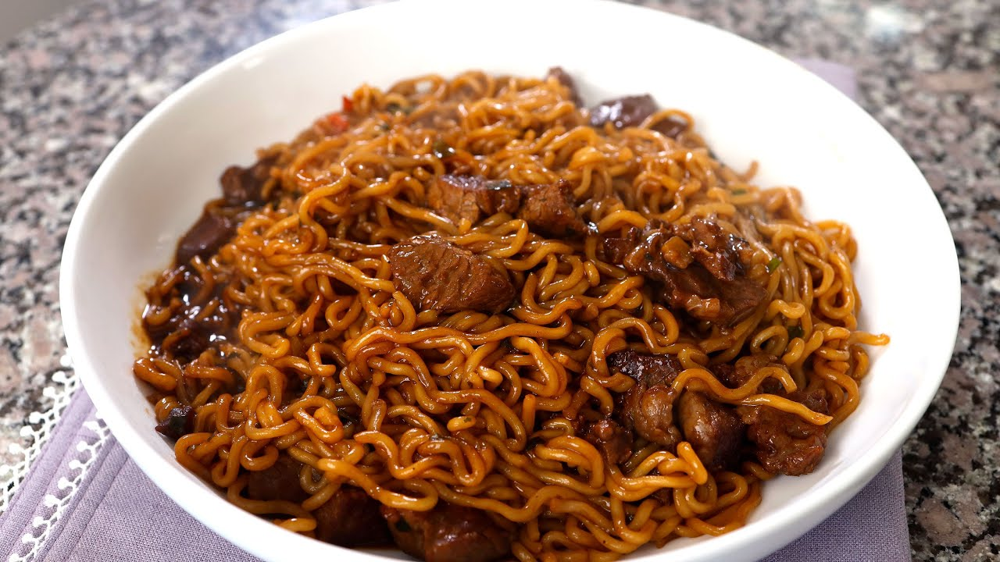

Ram-Don

Nice bowl of ram-don
Started making this because of Parasite
super yummy and makes us feel cozy
Ingredients
- Neoguri ramen
- Sirloin or steak of your choosing
- Salt
- Pepper
- Soy Sauce
- Mirin
- Peanut oil
Steps
- Get steak to room temp
- Boil water/li>
- Cut steak into cubes
- Marinate steak cubes with the soy sauce, mirin, and peanut oil
- Cook ramen with spice packets
- Cook steak cubes
- Drain water from ramen, leaving a little in the pan
- Add cooked steak cubes to ramen
- Mix
- Enjoy!